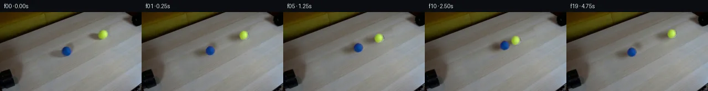

![首帧]()

Round 00
2026-11-05T14:31:19.258511+00:00像素候选变化代码 +352/−0inspection 更新
pixels 1934fa0f6f7611f2 · code d388339c841feddd
查看本轮 generate.py 真实 diff
--- previous/generate.py
+++ current/generate.py
@@ -0,0 +1,352 @@
+"""PixelWorld case_0031 generator.
+
+Local pixel operations only:
+ * clean wood plate via bidirectional ray marching along the measured grain axis
+ * analytic (multi-Gaussian) moving shadow fields fitted from frame 0 residuals
+ * photographed ball sprites cut with chroma/saturation mattes
+ * 1-D constant-speed head-on collision schedule, equal masses -> velocity reversal
+
+Frame 0 is overwritten with the exact bytes/array of first_frame.png.
+"""
+from pathlib import Path
+import numpy as np
+import cv2
+from PIL import Image, ImageDraw
+import artifact_io
+
+ROOT = Path(__file__).parent
+TMP = ROOT / '.tmp'
+TMP.mkdir(exist_ok=True)
+
+# ---------------------------------------------------------------- geometry
+first = np.array(Image.open(ROOT / 'first_frame.png').convert('RGB'))
+A = first.astype(np.float32) / 255.0
+H, W, _ = A.shape
+ys, xs = np.mgrid[0:H, 0:W].astype(np.float32)
+
+V = np.array([0.9087, -0.4174]) # track axis (BL pipe -> TR pipe)
+N = np.array([0.4174, 0.9087]) # track normal
+UG = np.array([0.936, -0.351]) # wood grain axis
+CB = np.array([121.5, 71.5]) # blue centre, frame 0
+CY = np.array([188.8, 40.6]) # yellow centre, frame 0
+RB, RY = 8.1, 8.2
+
+mx = A.max(2)
+mn = A.min(2)
+sat = (mx - mn) / (mx + 1e-6)
+
+
+def track_coords(c0):
+ """Signed (a,b) coordinates along (V,N) relative to centre c0."""
+ d = (xs - c0[0]) * V[0] + (ys - c0[1]) * V[1]
+ e = (xs - c0[0]) * N[0] + (ys - c0[1]) * N[1]
+ return d, e
+
+
+# ---------------------------------------- smooth per-channel wood band model
+def wood_band_model(img):
+ """Separable log model L(s)+F(b) of the table, robust medians per bin."""
+ valid = np.ones((H, W), bool)
+ valid[(img.max(2) - img.min(2)) > 0.10] = False
+ valid[img.max(2) < 0.33] = False
+ valid[:58, :150] = False # couch / upper table edge
+ valid[98:, :46] = False # BL pipe
+ valid[:32, 224:] = False # TR pipe
+ valid[124:, 228:] = False # BR corner
+ valid[:4, :] = False
+ valid[-3:, :] = False
+ valid[:, :5] = False
+ valid[:, -3:] = False
+ for c0 in (CB, CY):
+ valid[np.hypot(xs - c0[0], ys - c0[1]) < 38] = False
+ valid[(xs > 106) & (xs < 142) & (ys > 46) & (ys < 80)] = False # blemish
+ s = xs * UG[0] + ys * UG[1]
+ b = xs * N[0] * 0 + ys * 0
+ ng = np.array([0.351, 0.936])
+ b = xs * ng[0] + ys * ng[1]
+ sb = (s * 2).astype(int)
+ bb = (b * 2).astype(int)
+ sb -= sb.min()
+ bb -= bb.min()
+ chans = []
+ for k in range(3):
+ ls = np.log(img[..., k] + 1e-4)
+ F = np.zeros(bb.max() + 1)
+ L = np.zeros(sb.max() + 1)
+ for _ in range(20):
+ for i in range(sb.max() + 1):
+ m = valid & (sb == i)
+ if m.sum():
+ L[i] = np.median(ls[m] - F[bb[m]])
+ for j in range(bb.max() + 1):
+ m = valid & (bb == j)
+ if m.sum():
+ F[j] = np.median(ls[m] - L[sb[m]])
+ F -= F.mean()
+ chans.append(np.exp(L[sb] + F[bb]))
+ return np.stack(chans, -1)
… diff truncated; 265 more lines …